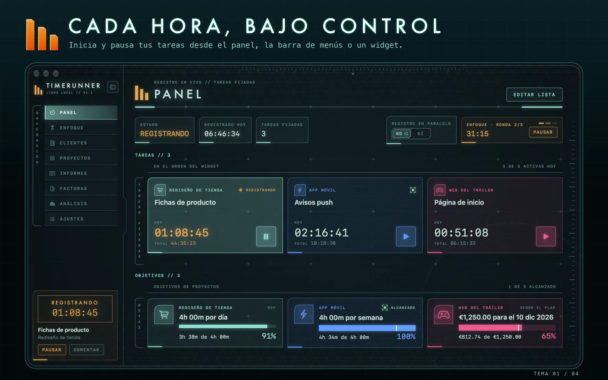
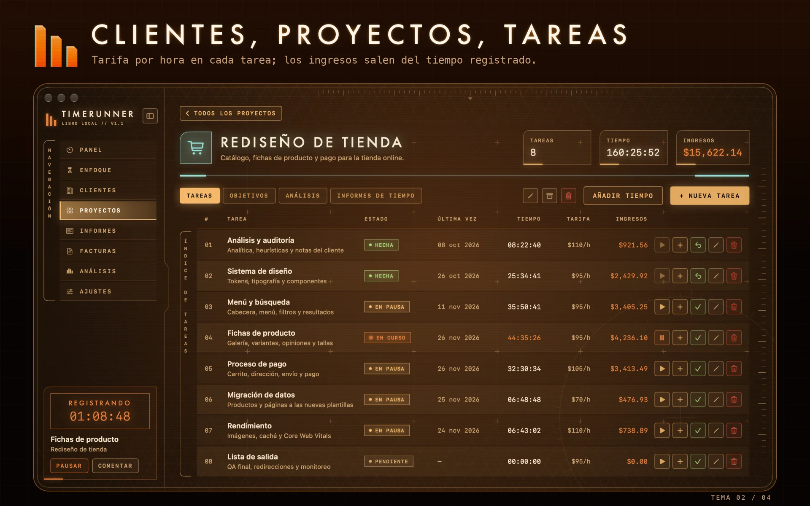
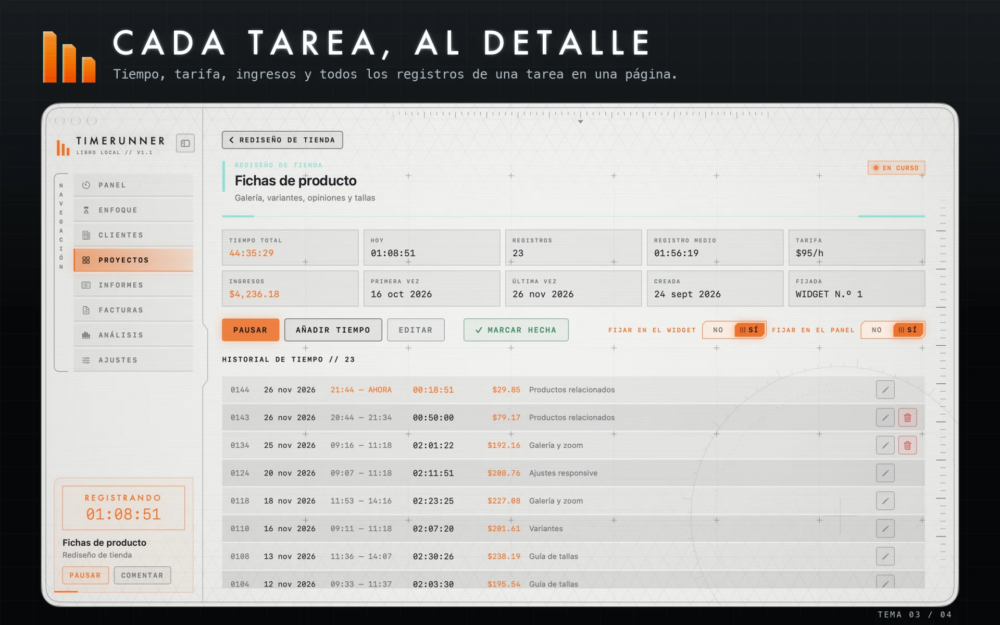
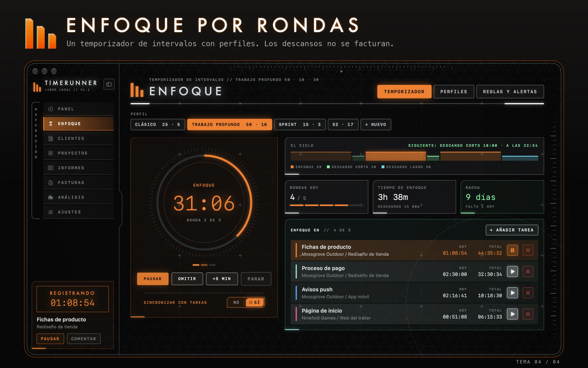
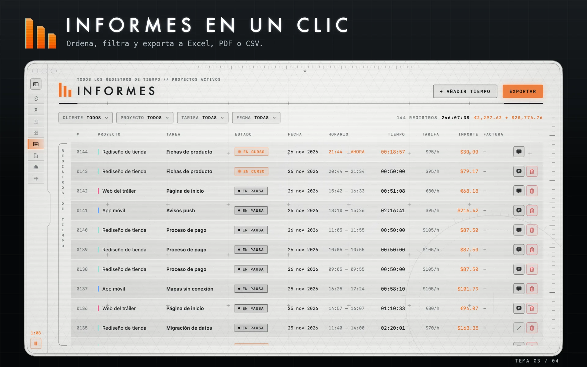
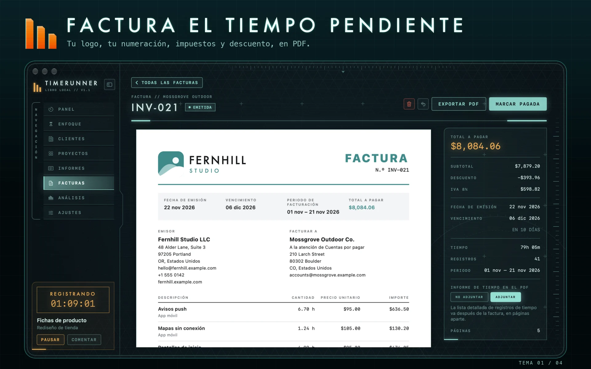
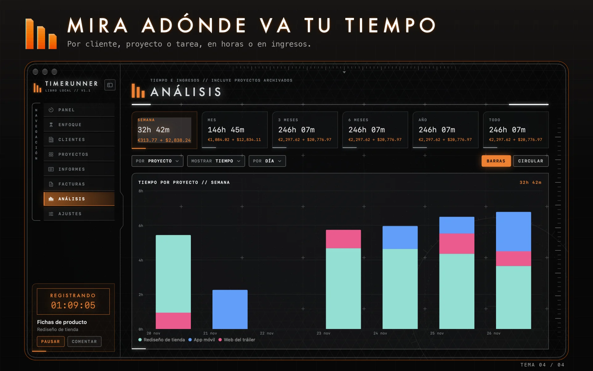
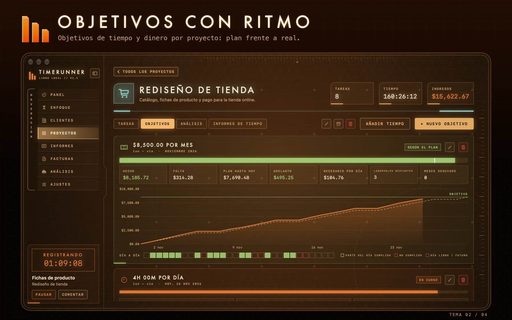
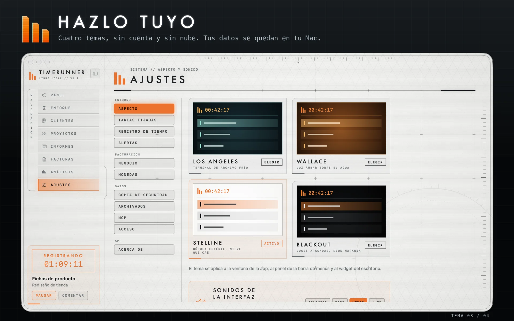
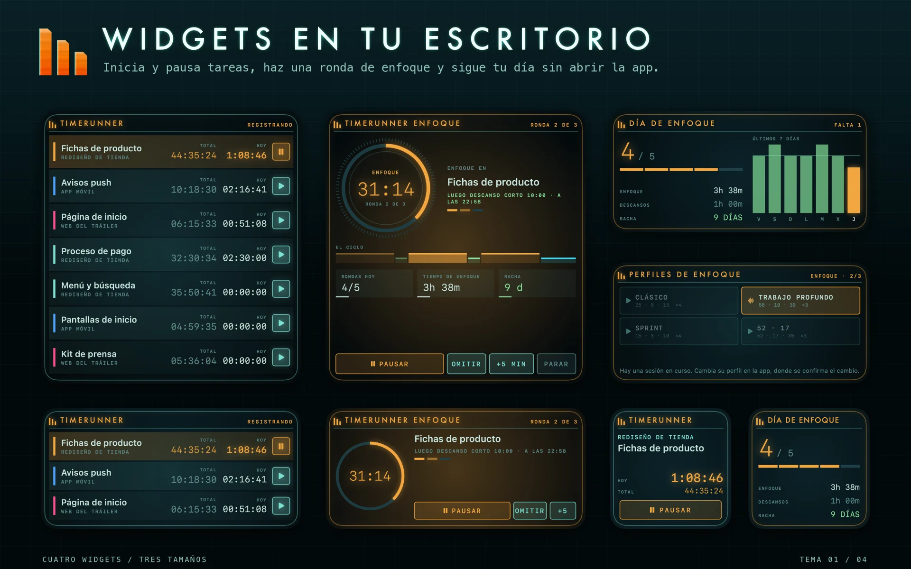

El tiempo, registrado
como lo facturas
Control de horas del futuro: temporizadores, enfoque Pomodoro, ingresos en directo y facturas PDF en una consola de neón para el Mac. Privado. Precioso. Un mes gratis.


- Clientes → proyectos → tareas → registros de tiempo, con tarifa y moneda por tarea
- Un solo temporizador a la vez, o varios en paralelo

- Añade el tiempo que olvidaste registrar, con día, duración y comentario
- Estados: Pendiente, En curso, En pausa, Hecha

- Un temporizador de intervalos al estilo Pomodoro: rondas de enfoque, descansos cortos y uno largo tras la última
- Perfiles: 25·5, 50·10, 15·3, 52·17 y los tuyos
- Puede poner en marcha el temporizador de una tarea y pausarlo en los descansos, para que el descanso no se facture
- Sonidos, notificaciones, aviso antes del final y pantalla de descanso
- Una lista de tareas para Enfoque: las sesiones siguen solo a las tareas que pones en ella

- Una tabla ordenable con todos los registros y filtros por cliente, proyecto, tarifa y fecha
- Exporta a un libro de Excel (.xlsx), PDF o CSV

- Facturas en PDF a partir del tiempo sin facturar de un cliente: todo o un periodo, una línea por tarea, proyecto o registro
- Tu logo, tu color, datos de pago, numeración, impuestos y descuento
- Borrador → Emitida → Pagada, con el vencimiento calculado a partir de la fecha límite
- El tiempo de una factura emitida nunca se factura dos veces

- Totales de la semana, el mes, el trimestre, el año o todo el tiempo: por cliente, proyecto o tarea, en horas o en ingresos

- Objetivos de tiempo o de dinero por proyecto: por día, semana o mes, o para una fecha
- Progreso, ritmo, un gráfico de plan frente a real y una marca para cada día

- Cuatro temas, del neón turquesa al negro sobrio
- Las secciones que no usas se pueden ocultar
- La ventana se encoge a una esquina de la pantalla y sigue siendo útil
- En nueve idiomas: inglés, español, francés, alemán, italiano, polaco, bielorruso, japonés y coreano

- Un clic para iniciar o pausar: en la app, en la barra de menús, en el escritorio
- Tres widgets: el temporizador, tu día y tus perfiles
- Fija una tarea en el panel y en el widget del escritorio por separado
- Sin cuenta, sin analíticas, sin publicidad: nada de lo que escribes sale de tu Mac
- Copias de seguridad diarias automáticas en tu Mac y en una carpeta que tú eliges
- Bloqueo opcional con Touch ID
- Cualquier moneda nacional y las diez mayores criptomonedas
- Un conector MCP integrado une TimeRunner con Claude, ChatGPT, Codex, Cursor, VS Code y otras herramientas de IA de tu Mac
- Pide las cosas con tus palabras —«inicia el temporizador de Diseño», «apunta dos horas a Acme ayer», «cierra esta tarea»— y tu asistente lo hace en TimeRunner
- Puede crear clientes, proyectos y tareas, iniciar y detener temporizadores, registrar tiempo, cerrar tareas y archivar proyectos
- Pide un informe: horas e ingresos por cliente, proyecto o tarea, por día, semana o mes; facturas, pagos recibidos y lo que falta por cobrar
- Desactivado hasta que lo activas, solo lectura si lo prefieres, y a través de él nunca se puede borrar nada
UN MES GRATIS, Y DESPUÉS TÚ ELIGES
TimeRunner se descarga gratis y todo es gratis durante el primer mes. Después:
Se paga cada mes
Se paga cada año, o en 12 pagos mensuales donde el App Store los ofrece
Un solo pago, nada que renovar
Sin un plan, TimeRunner pasa a ser de solo lectura: tus registros se quedan en tu Mac y se pueden seguir abriendo, exportando y guardando en copias de seguridad.
La suscripción se carga a tu cuenta de Apple y se renueva automáticamente por el mismo periodo y al mismo precio, salvo que se cancele al menos 24 horas antes de que termine el periodo. Puedes gestionarla o cancelarla en los ajustes de tu cuenta del App Store.
Precios de Estados Unidos. En otros países, el App Store muestra los suyos.